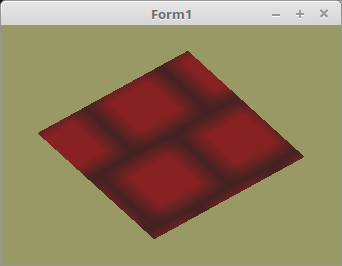

20 - Texturen
25 - Texturen von XPM

Für sehr einfache Texturen, ist das xpm-Format geeignet. Mit diesem kann man sehr schnell eine einfache Textur mit einem Text-Editor erstellen.
Da etwas anderes als BMP geladen wird, muss anstelle von TBitmap TPicture verwendet werden.
Momentan kann TPicture folgende Datei-Formate laden: BMP, GIF, JPG, PCX, PNG, P?M, PDS, TGA, TIF, XPM, ICO, CUR, ICNS.
procedure TForm1.InitScene;
var
pic: TPicture;
begin
pic := TPicture.Create; // Picture erzeugen.
with pic do begin
LoadFromFile('mauer.xpm'); // XPM-Datei laden.
Textur.LoadTextures(pic.Bitmap.RawImage); // Bitmap in VRAM laden.
Free; // Picture frei geben.
end;
Vertex-Shader:
#version 330
layout (location = 0) in vec3 inPos; // Vertex-Koordinaten
layout (location = 10) in vec2 inUV; // Textur-Koordinaten
uniform mat4 mat;
out vec2 UV0;
void main(void)
{
gl_Position = mat * vec4(inPos, 1.0);
UV0 = inUV; // Textur-Koordinaten weiterleiten.
}
Fragment-Shader:
#version 330
in vec2 UV0;
uniform sampler2D Sampler; // Der Sampler welchem 0 zugeordnet wird.
out vec4 FragColor;
void main()
{
FragColor = texture( Sampler, UV0 ); // Die Farbe aus der Textur anhand der Koordinten auslesen.
}
mauer.xpm:
/* XPM */
static char *XPM_mauer[] = {
"8 8 2 1",
" c #882222",
"* c #442222",
"********",
"* * ",
"* * ",
"* * ",
"********",
" * * ",
" * * ",
" * * "
};